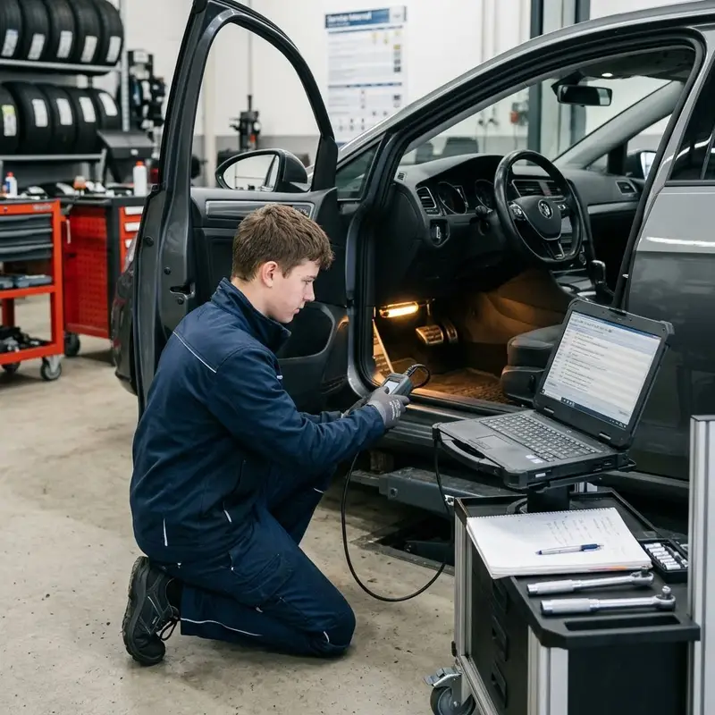

ΕΠΙΛΕΞΕ ΤΟ ΕΠΟΜΕΝΟ ΒΗΜΑ
MASTER DIAGNOSTIC CASE / ΔΥΣΚΟΛΟΜπες στο συνεργείο.
Μπες στο συνεργείο.
Βρες την αιτία.
Ένα Golf VII παρουσιάζει ενδείξεις ABS/ESP και διακοπές στην επικοινωνία με τη μονάδα ABS. Αντιμετώπισε ένα απαιτητικό υποθετικό περιστατικό όπως στο συνεργείο: από την αρχική σάρωση και τις μετρήσεις CAN μέχρι τη στοχευμένη επισκευή και την τελική αναφορά.

Volkswagen Golf VII (2016) · Επικοινωνία ABS / ESP
Δέκα απαιτητικά στάδια: παραλαβή, U0121, τροφοδοσία, αντίσταση CAN, παλμογράφος, σύνδεσμος, επανέλεγχος, live data, λειτουργική δοκιμή και τεκμηρίωση. Η βλάβη και οι τιμές αποτελούν εκπαιδευτικό σενάριο.
Εκτιμώμενη διάρκεια: 20–30 λεπτά. Η μάρκα και η γενιά του αυτοκινήτου είναι πραγματικές· η αστοχία, τα στιγμιότυπα οργάνων και όλες οι μετρήσεις είναι υποθετικά εκπαιδευτικά δεδομένα, όχι επίσημη τεχνική οδηγία Volkswagen. Για πραγματικές μετρήσεις απαιτείται διάγραμμα ανά VIN και διαδικασία κατασκευαστή.
Τα ευρήματα είναι εκπαιδευτικά. Δεν μετράμε αντίσταση σε ενεργό CAN και δεν αποσυνδέουμε/τρυπάμε καλώδια χωρίς την προβλεπόμενη διαδικασία. Δεν εκτελούμε επικίνδυνες δοκιμές πέδησης σε δημόσιο δρόμο. Τα pinouts και οι μετρήσεις εξαρτώνται από VIN και τεχνικές προδιαγραφές.